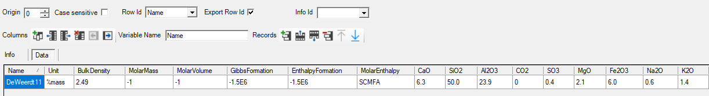
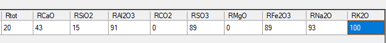

FA
The data block FA contains information on the composition of FA in terms of weight percentages of the different oxides.


The data block contains following columns
|
Name |
Unique identifier of the FA composition. The name appears in linked drop down lists in input tables, e.g. FA::Reference$in the FA group of ModuleCement_Input_02_Recipe table. |
|
Unit |
Defines the used unit. Only mass% (i.e. g/100 g FA) is valid. Not used. |
|
BulkDensity |
Bulk density of the FA in kg/dm³. |
|
MolarMass |
|
|
MolarVolume |
|
|
GibbsFormation |
|
|
EnthalpyFormation |
|
|
CaO |
The mass percentage of CaO in FA. |
|
SiO2 |
The mass percentage of SiO2 in FA. |
|
Al2O3 |
The mass percentage of Al2O3 in FA. |
|
CO2 |
The mass percentage of CO2 in FA. |
|
SO3 |
The mass percentage of SO3 in FA. |
|
Fe2O3 |
The mass percentage of Fe2O3 in FA. |
|
MgO |
The mass percentage of MgO in FA. |
|
Na2O |
The mass percentage of Na2O in FA. |
|
K2O |
The mass percentage of K2O in FA. |
|
Rtot |
Overall reactivity of FA in percentage. The reactive weight percentage of the total oxide content is obtained by multiplying the weight percentage of each oxide with the overall reactivity. See Reactivity of SCMs. |
|
RCaO |
Oxide specific reactivity of CaO in percentage. The reactive weight percentage of the total oxide content is obtained by multiplying the weight percentage of each oxide with the oxide-specific reactivity. See Reactivity of SCMs. |
|
RSiO2 |
Oxide specific reactivity of SiO2 in percentage. The reactive weight percentage of the total oxide content is obtained by multiplying the weight percentage of each oxide with the oxide-specific reactivity. See Reactivity of SCMs. |
|
RAl2O3 |
Oxide specific reactivity of Al2O3 in percentage. The reactive weight percentage of the total oxide content is obtained by multiplying the weight percentage of each oxide with the oxide-specific reactivity. See Reactivity of SCMs. |
|
RCO2 |
Oxide specific reactivity of CO2 in percentage. The reactive weight percentage of the total oxide content is obtained by multiplying the weight percentage of each oxide with the oxide-specific reactivity. See Reactivity of SCMs. |
|
RSO3 |
Oxide specific reactivity of SO3 in percentage. The reactive weight percentage of the total oxide content is obtained by multiplying the weight percentage of each oxide with the oxide-specific reactivity. See Reactivity of SCMs. |
|
RFe2O3 |
Oxide specific reactivity of Fe2O3 in percentage. The reactive weight percentage of the total oxide content is obtained by multiplying the weight percentage of each oxide with the oxide-specific reactivity. See Reactivity of SCMs. |
|
RMgO |
Oxide specific reactivity of MgO in percentage. The reactive weight percentage of the total oxide content is obtained by multiplying the weight percentage of each oxide with the oxide-specific reactivity. See Reactivity of SCMs. |
|
RK2O |
Oxide specific reactivity of K2O in percentage. The reactive weight percentage of the total oxide content is obtained by multiplying the weight percentage of each oxide with the oxide-specific reactivity. See Reactivity of SCMs. |
|
RNa2O |
Oxide specific reactivity of Na2O in percentage. The reactive weight percentage of the total oxide content is obtained by multiplying the weight percentage of each oxide with the oxide-specific reactivity. See Reactivity of SCMs. |
The names and order of these columns may not be changed.
One composition is available (the user can add additional other compositions with unique names - see Add records)
|
DeWeerdt11 |
FA composition from De Weerdt et al. (2011). Values for reactivity are taken from Glosser et al. (2021) (Table 4) and are only for illustrative purposes. |
Created with the Personal Edition of HelpNDoc: Make your documentation accessible on any device with HelpNDoc